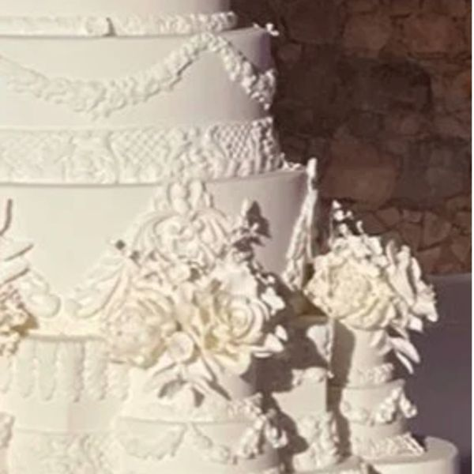

Episode 17 · May 22, 2026 · 30 min
Wedding Cakes
▶ Play this episode
Show Notes
🚨🎂 This week on The Wedding Police, Penny and Jim are taking on one of the sweetest — and most stressful — parts of wedding planning: the cake! From towering Pinterest masterpieces that wobble in the summer heat to couples arguing over buttercream versus fondant like it’s a courtroom trial, nothing is off limits. The duo dives into cake disasters, tasting temptations, topper trends, and the age-old question: is smashing cake in your partner’s face romantic… or a misdemeanor? Grab a fork and tune in for frosting-fueled laughs and wedding cake chaos!
🚨 Never Miss a Case
New episodes every week. Follow The Wedding Police so the next one lands in your feed.
Enjoying it? A quick rating on Apple Podcasts or Spotify helps new couples find the show.